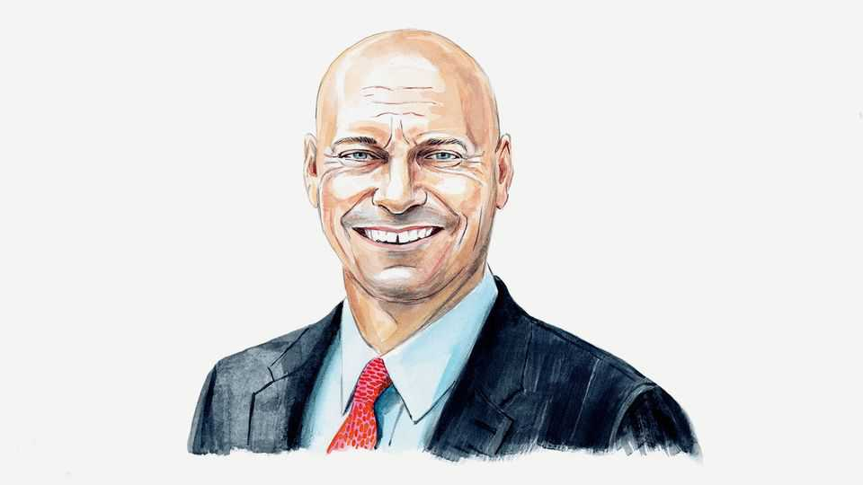

A former ally asks why Donald Trump abandoned his own legacy
The president is undermining the few advantages Republicans still have, writes Marc Short

Oct 22nd 2026
MIDTERM ELECTIONS are a referendum on the party in power, and Republicans took power promising to defeat inflation, restore a roaring economy and usher in a new American golden age. But they have not delivered, and on November 3rd voters will punish them at the ballot box.
The first Trump administration brought a new style but largely embraced traditional free-market policies: lowering taxes, cutting regulations and encouraging the government to leave the American people alone and let them prosper. The result—over the first three years of the administration, before covid-19 struck—was almost 7m new jobs, a $6,000 average increase in the income of middle-class families and an unemployment rate of 3.5%, a 50-year low. Had it not been for the pandemic, Donald Trump may have won re-election in 2020 on the strength of the economy. I was the White House director of legislative affairs in the first Trump administration, leading our congressional outreach, and I will always be proud of our conservative record.
When he returned to the White House in January 2025, however, Mr Trump embraced some of his most protectionist and populist economic instincts. Needless trade wars with Canada and other allies have pummelled American farmers, including in key swing states. Six of the Senate swing seats alone account for more than a fifth of America’s $880bn a year in goods-and-services trade with Canada. But all Americans have suffered from the uncertainty and higher prices brought on by the president’s on-again, off-again tariff policies.
Meanwhile, Mr Trump has shaken business confidence by embracing a litany of other interventionist policies, including securing stakes and even “golden shares” in private companies. The economic results will be even worse if he follows through on promises to expand unsustainable entitlement programmes, order banks to cap credit-card interest rates or impose price controls.
Beyond the economic risks, these policies have frustrated and alienated voters who expected the Republican Party to defend free markets and small government, and to “drain the swamp” following the corruption that swirled around the Biden administration, from the president’s inner circle to his pardon selections (including his own son, Hunter). Between real economic consequences, Democrat-lite rhetoric and administration officials from top to bottom bathing in the swamp rather than draining it, Republican control of the House and possibly the Senate is now in question.
Some voices in the Trump coalition argue that tariffs and a populist agenda are necessary to win elections. The evidence suggests otherwise. Today only 28% of voters approve of the president’s handling of the economy. Yet when his first administration embraced conservative economic policies, 63% did.
Independent conservative voices were widely denounced by Mr Trump’s loudest supporters for even suggesting that the second administration’s tariffs and other trade policies—the largest tax hike in decades, had they come fully into effect—would hurt the economy and the Republicans’ electoral chances. They now stand vindicated. The president is already setting low expectations ahead of the midterms and the knives are out among his closest political advisers.
Mr Trump appointed the justices who overturned Roe v Wade, the 1973 Supreme Court ruling that established a constitutional right to abortion, and pro-lifers rejoiced when Planned Parenthood, a nationwide reproductive-health-care organisation, was defunded. But Congress failed to extend the measure beyond one year, and Planned Parenthood’s taxpayer funding has returned. The president continues to side with Planned Parenthood and the abortion industry against pro-life states that want to restrict access to the chemical abortion pill. Pro-lifers are growing more disenchanted with the Trump administration by the day.
Conservative critics raised the alarm and the administration ignored us—gleefully so at times. Congress ceded its power to the executive and chose not to act.
The one saving grace for Republican candidates may be the Democratic Party’s swift pivot to the socialist left. Republican candidates are rightly criticising these radical and sometimes antisemitic candidates: look no further than Michigan, where the Democratic Senate candidate views Israel’s government as no less evil than Hamas; or New York, where another congressional contender participated in rallies at which protesters celebrated Israeli deaths. Yet their messaging falls flat when the president is offering up $5,000 “Trump dividend” cheques if Republicans win in November and promises to muscle into more private companies. The administration has already taken stakes in 34 companies, most prominently Intel and most recently two critical-minerals groups, Elmet and Hertha Metals.
Mr Trump returned to the White House by contrasting his first-term economy with the high prices and malaise wrought by the Biden administration’s inflationary, anti-growth policies. Then he abandoned his own legacy. The results have been predictable. ■
Marc Short is the chairman of Advancing American Freedom, a campaign group. He was chief of staff to Vice-President Mike Pence from 2019 to 2021 and White House director of legislative affairs from 2017 to 2018.